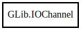

IOChannel
Object Hierarchy:

Description:
[ Compact ]
[ CCode ( ref_function = "g_io_channel_ref" , unref_function = "g_io_channel_unref" ) ]
public class IOChannel
Content:
Creation methods:
Methods:
- public uint add_watch (IOCondition condition, IOFunc func)
- public uint add_watch_full (int priority, IOCondition condition, owned IOFunc func)
- public IOSource create_watch (IOCondition condition)
- public IOStatus flush () throws IOChannelError
- public IOCondition get_buffer_condition ()
- public size_t get_buffer_size ()
- public bool get_buffered ()
- public bool get_close_on_unref ()
- public unowned string get_encoding ()
- public IOFlags get_flags ()
- public unowned string get_line_term (out int length)
- public void init ()
- public IOStatus read_chars (char[] buf, out size_t bytes_read) throws ConvertError, IOChannelError
- public IOStatus read_line (out string str_return, out size_t length, out size_t terminator_pos) throws ConvertError, IOChannelError
- public IOStatus read_line_string (StringBuilder buffer, out size_t terminator_pos) throws ConvertError, IOChannelError
- public IOStatus read_to_end (out string str_return, out size_t length) throws ConvertError, IOChannelError
- public IOStatus read_unichar (out unichar thechar) throws ConvertError, IOChannelError
- public IOStatus seek_position (int64 offset, SeekType type) throws IOChannelError
- public void set_buffer_size (size_t size)
- public void set_buffered (bool buffered)
- public void set_close_on_unref (bool do_close)
- public IOStatus set_encoding (string? encoding) throws IOChannelError
- public IOStatus set_flags (IOFlags flags) throws IOChannelError
- public void set_line_term (string line_term, int length)
- public IOStatus shutdown (bool flush) throws IOChannelError
- public int unix_get_fd ()
- public IOStatus write_chars (char[] buf, out size_t bytes_written) throws ConvertError, IOChannelError
- public IOStatus write_unichar (unichar thechar) throws ConvertError, IOChannelError